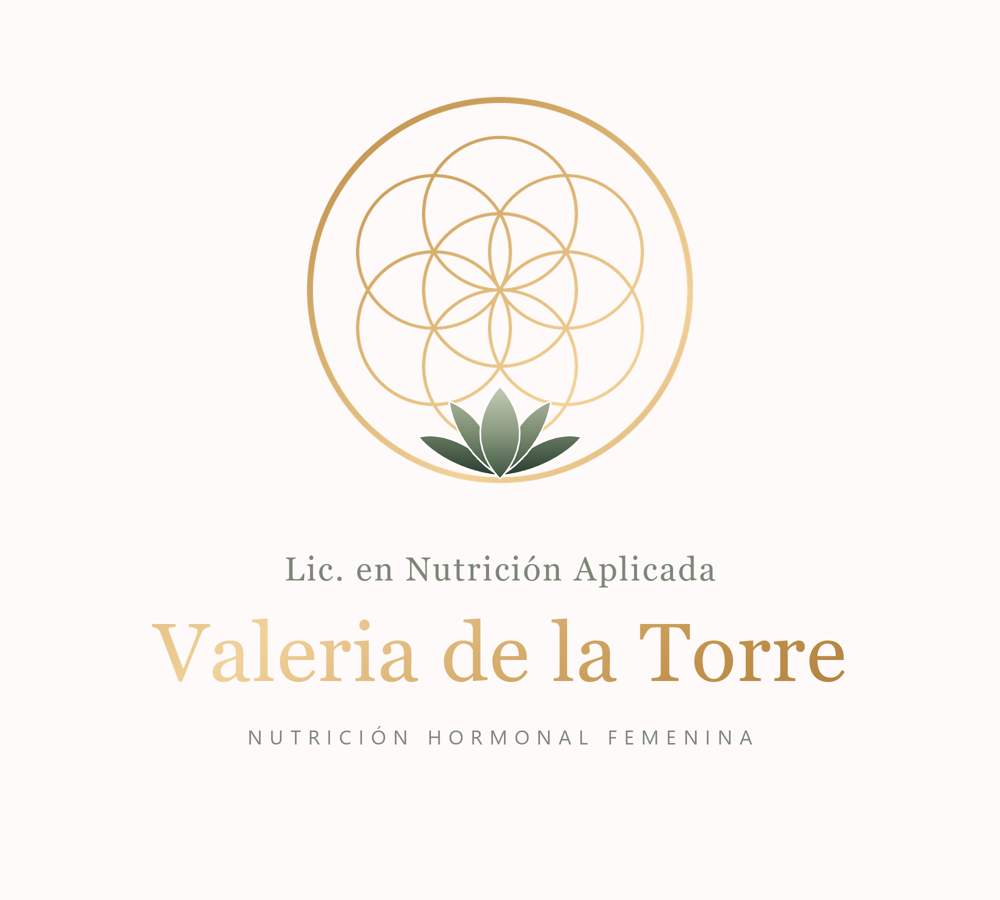
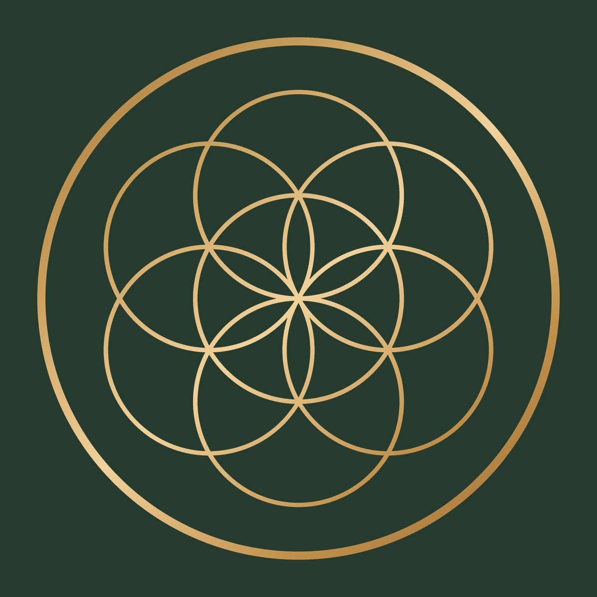
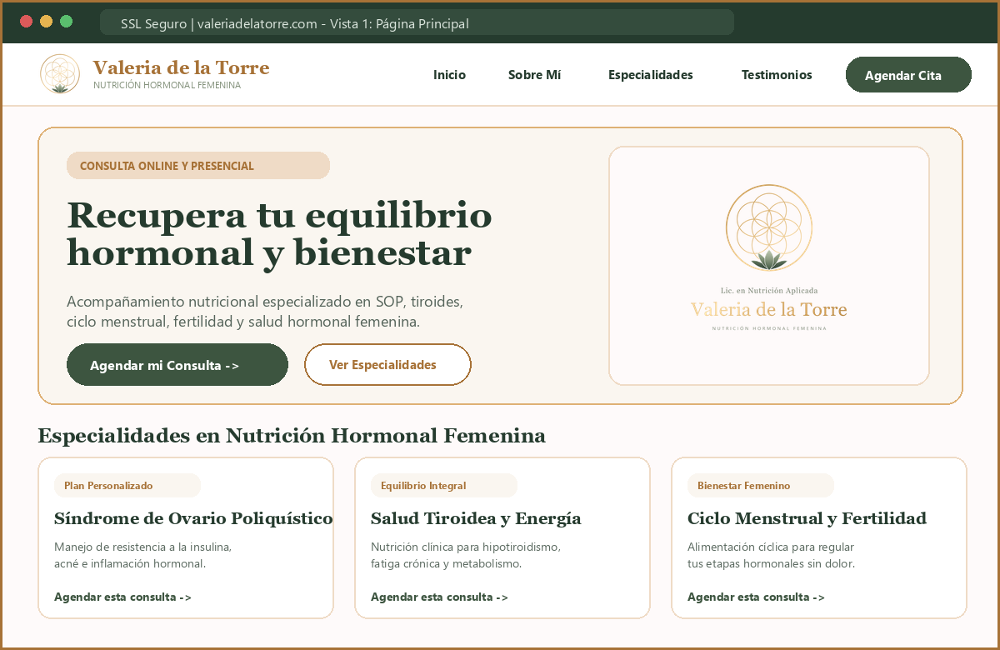
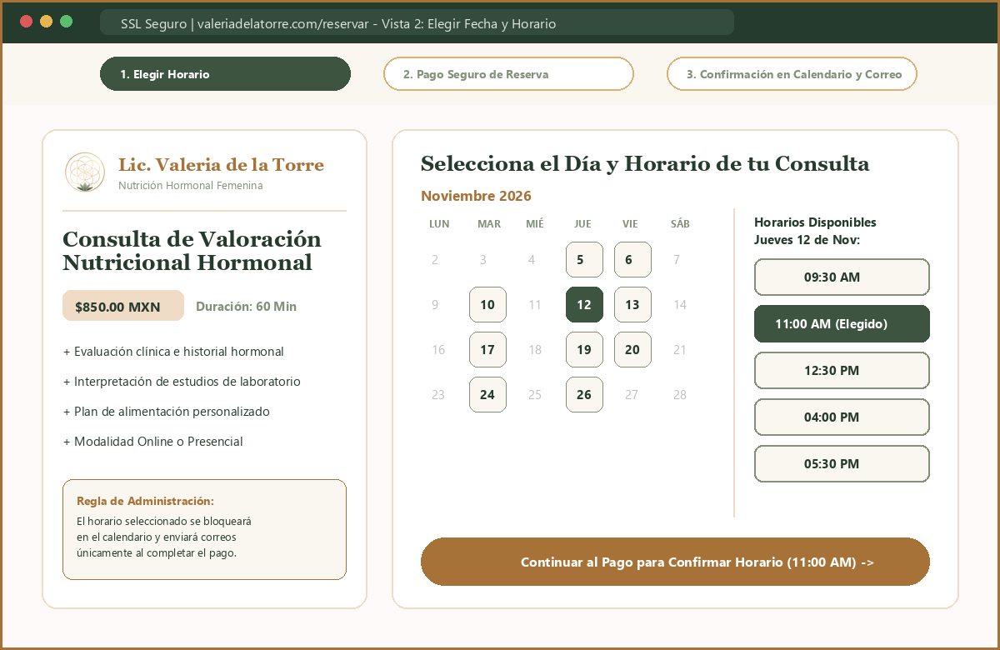
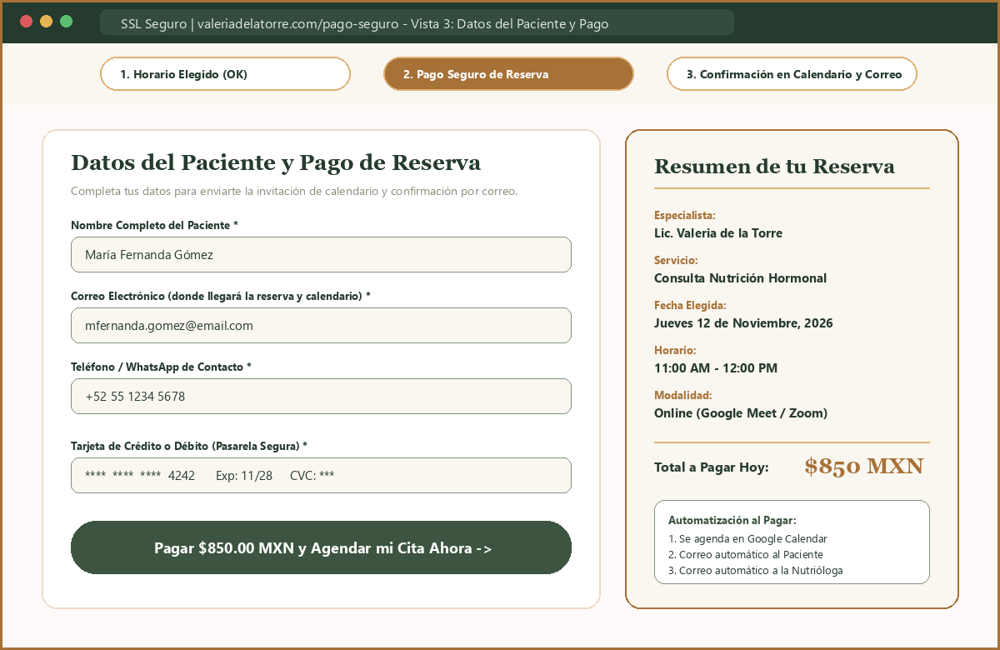
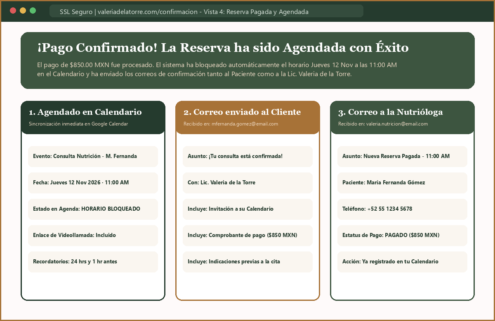

Sitio Web y Sistema de Reservas con Pago
Inicio del proyecto: A partir de este lunes · Duración estimada: 2 meses (8 semanas)
Propósito del Sistema
Desarrollar una plataforma web profesional para la Lic. Valeria de la Torre que permita a sus pacientes agendar su consulta en línea con mayor administración y orden: únicamente cuando el usuario realice el pago de su reserva, el sistema agendará la cita en el calendario y enviará la confirmación por correo electrónico tanto al cliente como a la nutrióloga.
Funcionalidades Incluidas
1. Agenda de Horarios (13:00 a 21:00 hrs)
Selección de horario en bloques de 1 hora por sesión entre las 13:00 y las 21:00 hrs (última sesión de 20:00 a 21:00 hrs).
2. Esquema de Tarifas Oficiales
Consulta Virtual: 1ª Consulta en $650 MXN y Seguimiento en $400 MXN.
Consulta Presencial: $750 MXN por sesión.
3. Condición Obligatoria de Pago (Mercado Pago)
Regla clave: Si el usuario no paga la reserva en línea, el horario no se bloquea y permanece disponible.
4. Portal del Paciente y Cuestionario de 1ª Consulta
Al iniciar sesión tras pagar la 1ª consulta, el paciente responde un cuestionario clínico para que la nutrióloga anticipe su caso.
5. Métricas por Cliente y Editor de Cuestionario
Panel de la nutrióloga con expediente por cliente, estado general del cuestionario y editor 100% personalizable (abierta, opción múltiple, casillas, escala).
6. Mapa de Calor y Atractivo de Secciones
Métricas visuales de lo que más seleccionan y ven los usuarios para identificar a qué secciones de la página darles mayor importancia y atractivo.
Etapas de Desarrollo y Estado de Avance
| Periodo | Fase del Proyecto | Entregables Incluidos | Estado |
|---|---|---|---|
| Semanas 1 y 2 (Mes 1) |
Fase 1: Identidad Digital y Diseño Base | Vectorización de las 3 versiones del logotipo (.SVG y .PNG), extracción de paleta de colores oficial y guía de estilos web. |
✓ Completado |
| Semanas 3 y 4 (Mes 1) |
Fase 2: Página Web, Portal de Paciente y Panel Clínico | Página web con tarifas ($650/$400/$750), horarios 13:00–21:00 (1h), Portal de Paciente con cuestionario de 1ª consulta y Panel de la Nutrióloga con métricas por cliente, editor de cuestionario y mapa de calor. | ✓ Completado |
| Semanas 5 y 6 (Mes 2) |
Fase 3: Motor de Reservas, MySQL y Mercado Pago | Base de datos MySQL en Neubox cPanel y pasarela de cobro con Mercado Pago Checkout Pro (condición de pago previo para confirmar cita). | En Integración |
| Semanas 7 y 8 (Mes 2) |
Fase 4: Calendario, Correos y Lanzamiento | Sincronización con Google Calendar, correos automáticos para cliente y nutrióloga, pruebas de cobro real y publicación oficial. | Programado |
Logotipos Oficiales Digitalizados para la Web

Portada Principal (Hero)
Barra de Navegación

Pie de Página y Favicon
¿Cómo se verá y funcionará la Plataforma Paso a Paso?

Presentación, especialidades y botón de cita

Calendario interactivo con horarios libres

Sin pago no se bloquea la hora en agenda

Agendado en Google Calendar + Email a ambos
Stack Tecnológico Recomendado
| Módulo del Sistema | Tecnologías / Herramientas Convenientes | Beneficio para el Proyecto |
|---|---|---|
| 1. Diseño e Interfaz Web (Frontend) | HTML5, CSS3 Moderno (Variables CSS / Tailwind) y JavaScript / React (Next.js) | Carga ultrarrápida en celulares, diseño elegante y posicionamiento en buscadores (SEO). |
| 2. Pasarela de Pagos en Línea | Stripe Checkout y/o Mercado Pago | Cobro seguro con tarjetas de crédito y débito; valida el pago antes de confirmar la cita. |
| 3. Agenda y Calendario | Google Calendar API / Motor de Reservas (Cal.com / Node.js) | Sincronización automática de horarios libres y bloqueo inmediato en el calendario al pagar. |
| 4. Correos Automáticos y Base de Datos | Resend / Brevo / Nodemailer (SMTP) + Supabase / Firebase | Envío instantáneo de confirmaciones y recibos por correo al cliente y a la nutrióloga. |
| 5. Alojamiento Web (Hosting y SSL) | Vercel / Netlify / Hostinger Cloud con Certificado SSL (HTTPS) | Alta disponibilidad 24/7 y conexión cifrada segura para proteger los datos de los pacientes. |